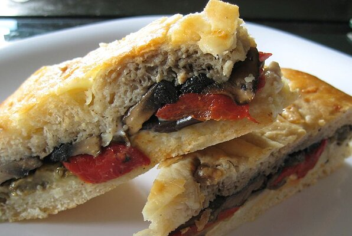

Home
Feta Eggs
Lasagna

Mediterranean Sandwich
A fun, easy and great tasting vegetable sandwich.
Ingredients
- 1 eggplant, sliced into strips
- 2 red bell peppers
- 2 tablespoons olive oil, divided
- 2 portobello mushrooms, sliced
- 3 cloves garlic, crushed
- 4 tablespoons mayonnaise
- 1 (1 pound) loaf focaccia bread
Steps
- Preheat oven to 400 degrees F.
- Brush eggplant and red bell peppers with 1 tablespoon olive oil; use more if necessary, depending on sizes of vegetables. Place on a baking sheet and roast in preheated oven. Roast eggplant until tender, about 25 minutes; roast peppers until blackened. Remove from oven and set aside to cool.
- Meanwhile, heat 1 tablespoon olive oil and cook and stir mushrooms until tender. Stir crushed garlic into mayonnaise. Slice focaccia in half lengthwise. Spread mayonnaise mixture on one or both halves.
- Peel cooled peppers, core, and slice. Arrange eggplant, peppers and mushrooms on focaccia. Wrap sandwich in plastic wrap; place a cutting board on top of it and weight it down with some canned foods. Allow sandwich to sit for 2 hours before slicing and serving.